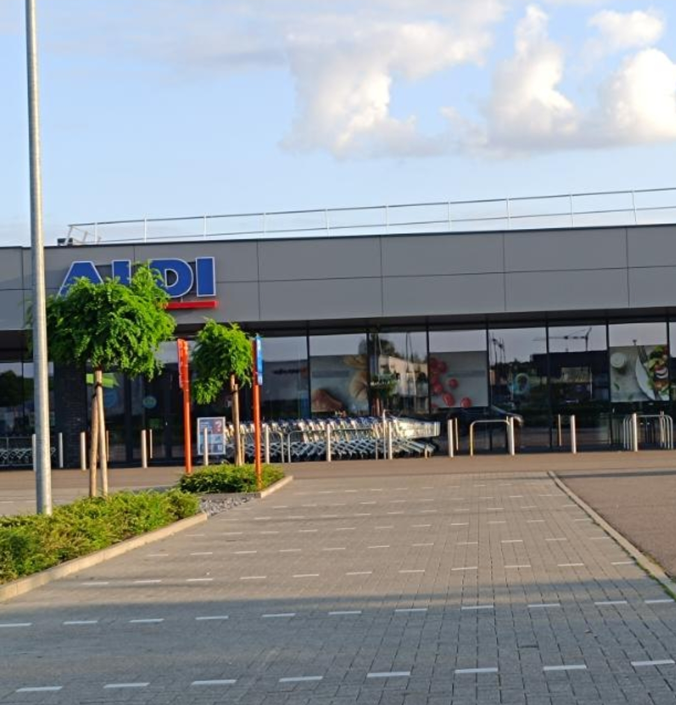

Mijn werkervaringen zijn heel miniem. Toen ik 18 was ben ik een half jaar de Bachelor Bouw gaan proberen te Thomas More in Geel. Dit was echter niet de richting voor mij dus ben ik na het eerste semester gestopt. Hierna heb ik een aantal weken interim werk gedaan maar daar is niks van gekomen. Tot ieders verbazing begon toen Corona wat voor velen een negatieve ervaring was. Maar ik heb hier mijn huidige job aan te danken waar ik tot vandaag nog steeds werk. Ik ben begonnen als ‘karrenpoetser’ bij de ingang van de Aldi in Lommel en na een hete zomer hard gewerkt te hebben werd mijn inzet beloond boden ze me een job aan. Op dit moment werk ik als Opvang Ziekte bij Aldi NV. Dit houdt in dat ik over heel de regio Limburg mag gaan vervangen waar zieken zijn.
